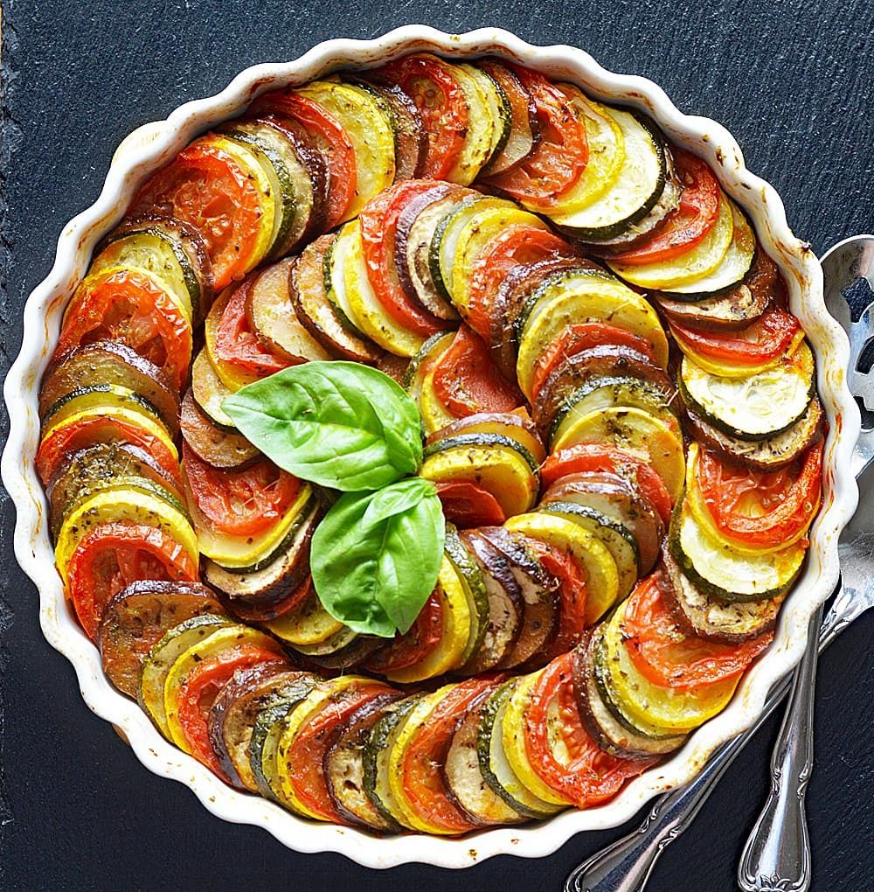
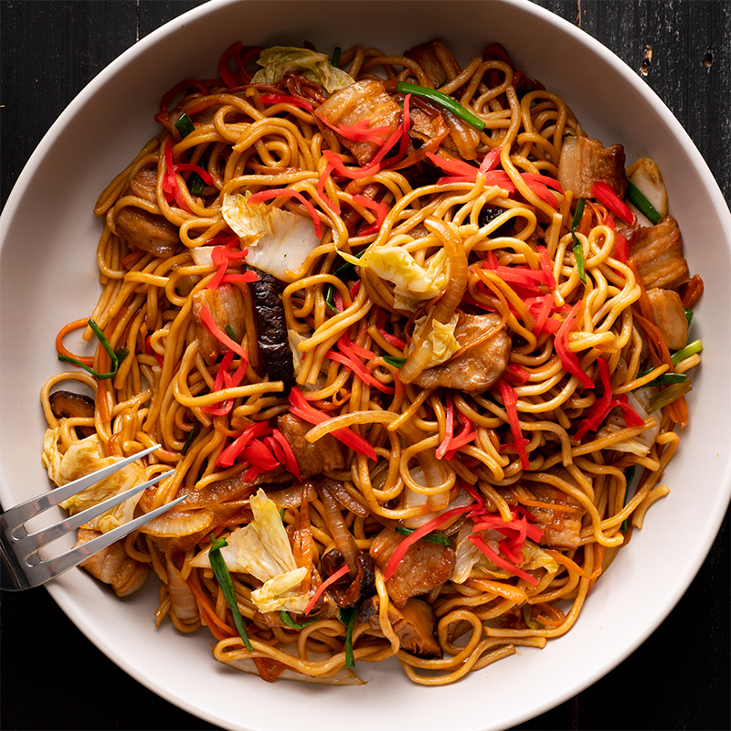

RECEITAS
Ratatouille
Ingredientes
1. Corte os vegetais em rodelas finas sem as sementes.
2. Cubra o fundo de uma forma com o molho de tomate.
3. Monte tudo intercalando com os vegetais.
4. Amasse o alho e espalhe por cima acrescentando o sal e o alecrim a gosto.
5. Regue com um pouco de azeite e cubra com papel-manteiga ou alumínio.
6. Leve ao forno por 40 minutos a uma temperatura de 180° C a 200° C.
Yakisoba
Ingredientes
1. Cozinhe o macarrão em água salgada e reserve.
2. Em uma panela grande, coloque o óleo e refogue a cebola.
3. Acrescente a carne, o brócolis, a couve-flor, a cenoura, a acelga, o champignon e tempere com shoyu.
4. Despeje o molho para yakisoba e deixe cozinhar até os legumes ficarem cozidos em ponto al dente.
5. Adicione o macarrão, misture bem e sirva logo a seguir.
Strogonoff de frango

Ingredientes
1. Em uma panela, misture o frango, o alho, a maionese, o sal e a pimenta.
2. Em uma frigideira grande, derreta a manteiga e doure a cebola..
3. Junte o frango temperado até que esteja dourado.
4. Adicione os cogumelos, o ketchup e a mostarda.
5. Incorpore o creme de leite e retire do fogo antes de ferver.
6. Sirva com arroz branco e batata palha.